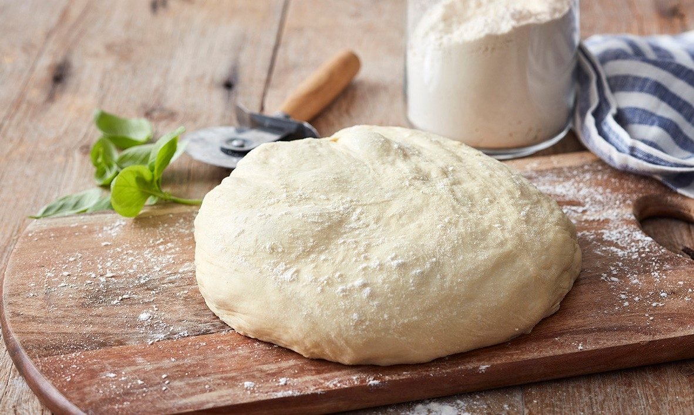

Pizza Dough

Description
An easy recipe for pizza dough
Ingredients
- 7g sachet dried yeast
- 1 cup lukewarm water
- 400g plain flour
- 2 tsps salt
- 3 Tbsps olive oil
Steps
- Whisk yeast and water in a jug. Let stand for 5 mins or until frothy
- Place flour and salt in a large bowl. Make a well in the centre. Pour in the yeast mixture and oil. Using your hands, mix the dough until it comes together and is smooth. Turn out onto a lightly floured work surface and knead briefly.
- Place dough in a lightly oiled bowl and cover with cling wrap. Set aside in a warm place to rise for 30 minutes to an hour until it doubles in size.
- Turn dough out onto a lightly floured surface and knead gently for another 5 minutes or until smooth. Divide dough and roll out pizza bases to desired size. Sprinkle a little flour on the bench before rolling to prevent dough from sticking. Your dough is now ready for your favourite pizza topping.
Source
Perfect Italiano Basic Pizza Dough